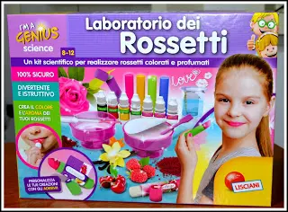
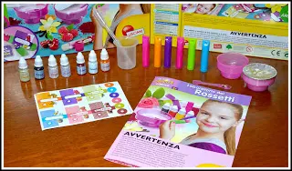
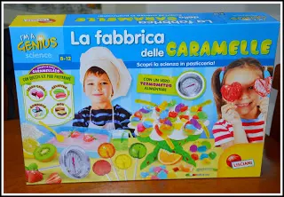
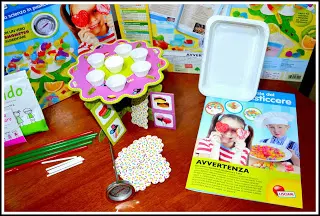
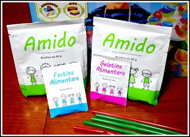
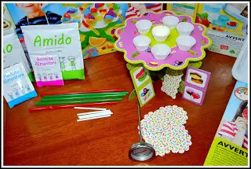
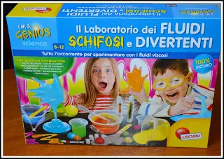
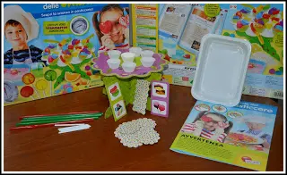
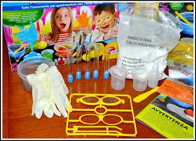
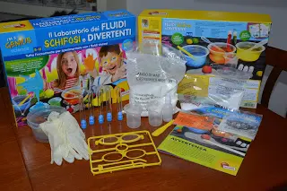

LISCIANI giochi educativi

Con gli anni i bambini stanno crescendo in modo diverso da come siamo cresciuti noi, possiamo notare che sono anche più tecnologici e tutto questo ti fa capire che anche i giochi non li apprezzano più come li apprezzavamo noi. Infatti, sono passati dai giocattoli più semplici a quelli più tecnologici ed anche più elaborati, ed è così che l'azienda Lisciani si è adattata al tempo e alle esigenze dei bambini.
Oggi ho voglia di mostrarvi dei giochi di elaborazione dell'azienda Lisciani giochi educativi. Infatti ognuno di essi è intitolato 'laboratorio'.
Abbiamo il laboratorio dei Rossetti, adatto ovviamente alle femminucce che va dagli 8 ai 12 anni ed è una vera e propria fabbrica di Lip Gloss per bambine.

Giochi scientifici per bambini
Per farli muovere i primi passi nel mondo della Scienza, per far capire loro che ogni cosa che utilizzano ha un lavoro dietro e soprattutto uno studio. All'interno della confezione è possibile trovare tutto il necessario per creare, colorare e profumare dei veri e propri lucidalabbra. Ci sono gli aromi, i coloranti e il burro di karité.

E poi ovviamente troviamo gli involucri per inserire il lucidalabbra, gli attrezzi, gli adesivi per personalizzare i rossetti e come di consueto, il manuale per insegnare passo passo le bambine in questa missione.
Ho trovato che questa confezione e questo laboratorio di Rossetti, sia il più completo tra tutti i giochi, in quanto non bisogna aggiungere nulla al di fuori di quello che già c'è all'interno della confezione. Facile da usare. Ovviamente con il supporto di un adulto, è molto carino da regalare alle bambine dagli 8 anni in su.
L'ho regalato a mia nipote più grande ed è rimasta davvero contenta in quanto è molto vanitosa, abbiamo provato a fare due tipi di Rossetti: uno rosso alla ciliegia ed uno di colore blu alla vaniglia. Un profumo bellissimo e ovviamente essendo burro di karité è anche molto morbido sulle labbra.
L'unica pecca di questo laboratorio e quindi di questi rossetti, è che si sciolgono facilmente, quindi il più delle volte è un prodotto da tenere in frigo dopo averlo creato, ma sommando tutto è un bel regalo da fare ad una bambina dei nostri tempi.
Prezzo: 19,90 €
La fabbrica delle caramelle
Invece, è una vera e propria fabbrica di caramelle gommose.

All'interno della confezione troviamo:
- il termometro alimentare
- 2 bustine di amido di mais
- 2 bustine di gelatina alimentare
- tutti gli attrezzi per fare caramelle Manuale d'istruzione.

Posso dire che è molto incompleto come gioco, in quanto dopo aver letto tutte le ricette delle caramelle sulle istruzioni, bisogna prendere molte cose dalla propria cucina.
Quindi quando aprirete il pacco assicuratevi di avere gli ingredienti descritti sul ricettario perché altrimenti è inutile iniziare a giocare.

Non mi è piaciuto molto, devo essere sincera.
Mia nipote più piccola, voleva fare i vermicelli ma dopo averli messi in frigo sono diventati tutto un solo pezzo e di vermicelli non aveva nemmeno l'aspetto. Oltre al fatto che non si sono solidificati.

Divertirsi insieme
Ci siamo sicuramente divertite nel pasticciare, anche se il risultato non è stato quello che ci aspettavamo.
È comunque un gioco che consiglio solo se si ha voglia di passare del tempo con i propri bambini nel modo tutto colorato e vivace.
Ha il manuale che è molto ricco e quindi è possibile prendere tutte le idee da utilizzare con le cose che ci sono all'interno della confezione.
Dare libero sfogo ai piccoli chef che sono i nostri bambini è sempre un modo carino per insegnare a creare caramelle gommose e lecca lecca gustosi.
Prezzo: 19,90 €

Il laboratorio dei FLUIDI SCHIFOSI e DIVERTENTI è ormai un must del momento ultimamente tra i bambini.
Un gioco davvero divertente nei pomeriggi noiosi. Nel manuale d'uso troviamo moltissime notizie utili scientifiche. Con questo gioco è possibile creare i tanto cercati slime del momento, quindi fluidi viscidi, appiccicosi e colorati. I bambini ormai ne vanno matti e questo gioco è ideale per un regalo.

All'interno della confezione troviamo:
- occhiali da costruire e guanti bianchi da vero scienziato.
pippette Pasteur - spatoline in legno
- spatoline in plastica
- bottiglia con tappo di sicurezza
- bicchieri graduati
- recipienti tondi
- provette con tappi
- amido di mais
- gomma di guar
- alginato di sodio
- colorante giallo
- cloruro di calcio
Manuale di istruzioni

Mescolando, girando, inserendo diversi ingredienti presenti all'interno della confezione sarà possibile creare fluidi che vi assicuro i bambini resteranno attaccati lì a giocare per un paio d'ore sicuramente.

Mi è piaciuto molto e di sicuro ne prenderò un altro più in là.
Prezzo: 11,50 €